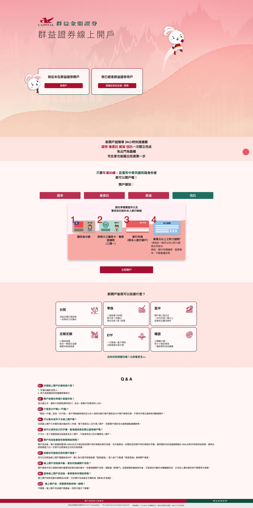
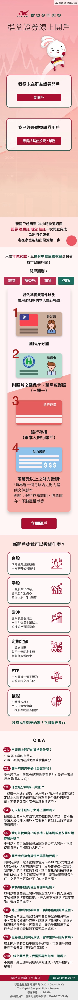
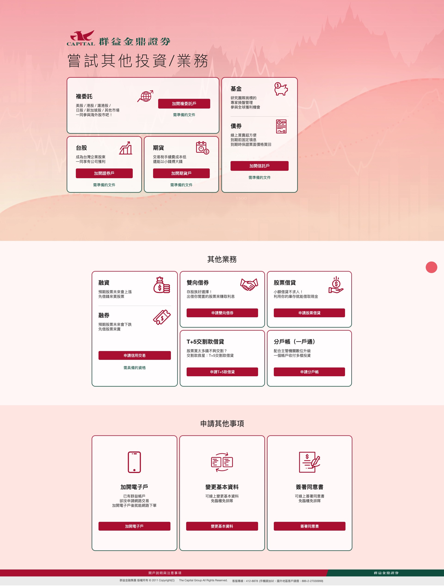
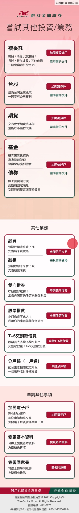
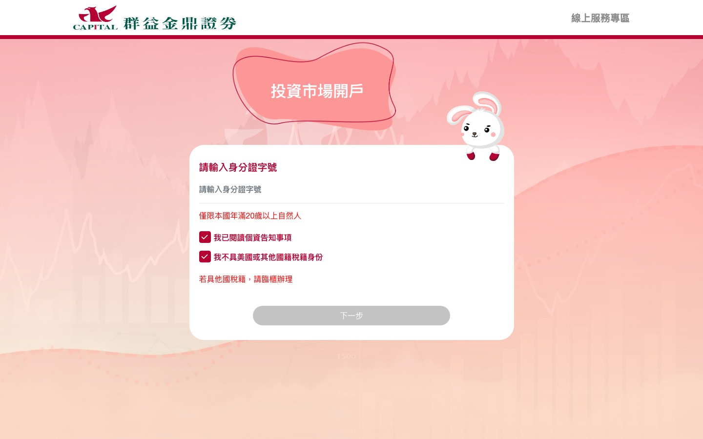
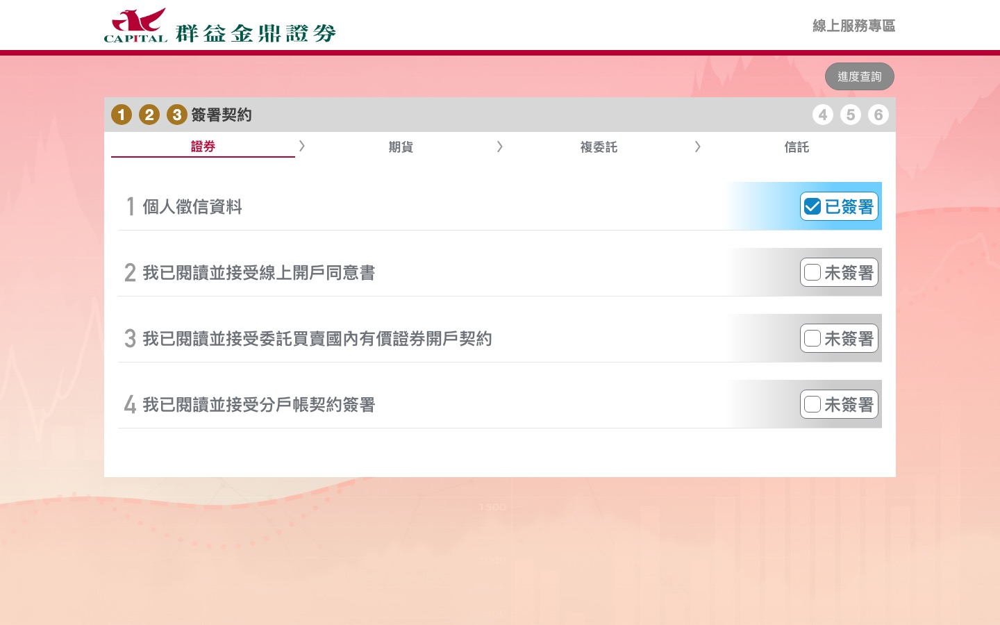
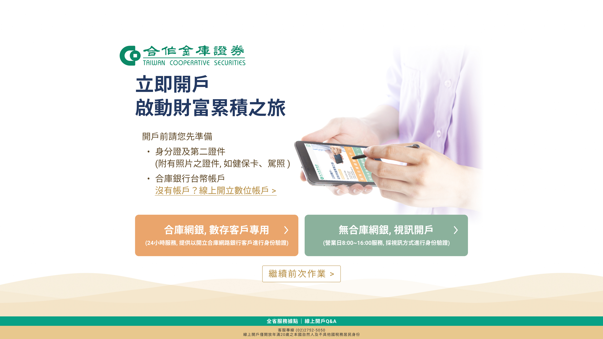
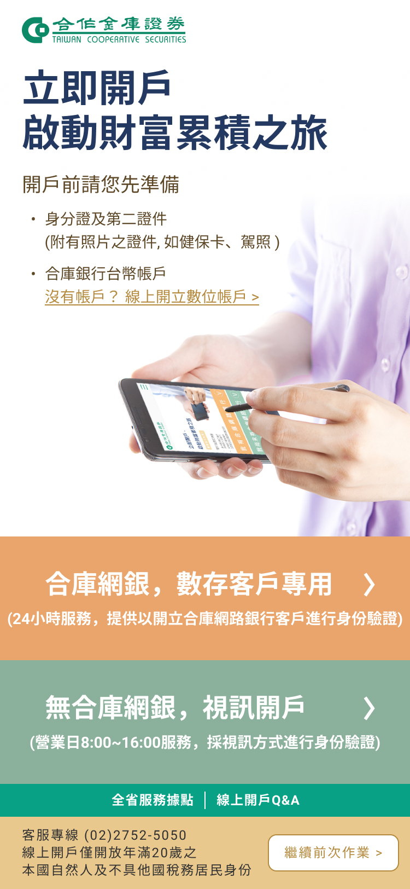

Case Study · Pure Design
Redesigning and independently coding the account-opening entry points for two Taiwanese brokerages, from Figma to production-ready HTML/CSS/JS
Summary
Early in my UI/UX Designer role, I was independently responsible for refreshing the online account-opening web pages for two brokerage clients — Capital Securities and Taiwan Cooperative Securities. With no formal design brief beyond "make the layout feel current," I redesigned each site's look, iterated directly with the client until visuals were approved, and then wrote the HTML/CSS/JavaScript myself to ship a fully responsive build that held up across both desktop and mobile.
Background & Challenge
These were among the first client-facing projects I owned after joining Systex. The brief from my manager was intentionally loose: the existing account-opening pages worked, but their layout felt dated, and it was on me to redesign them — there was no wireframe, no content strategy doc, and no pre-defined component library to start from.
That meant owning the full pipeline solo: proposing a new layout and visual direction, going back and forth with each brokerage's team until the look was signed off, and then translating the approved comps into a hand-built, responsive front-end — with no framework and no developer handoff, since I was the one writing the code.
How I Worked
Both engagements followed the same three-part loop, repeated until the client signed off and the build shipped.
Redesigned the page layout and visual style directly in Figma, working from the existing site rather than a formal brief — deciding what to keep, simplify, or restructure myself.
Presented comps to each brokerage's team and iterated on visuals — copy, imagery, layout — until they approved the direction, balancing my own design judgment against client feedback.
Hand-coded the approved design in HTML/CSS/JavaScript and tested breakpoints across common device widths and orientations so neither the desktop nor mobile layout broke.
Client 01
Capital Securities' account-opening funnel needed the most complete rebuild of the two: a landing page that routes new vs. existing customers, a service-selection screen covering five account types, and a numbered multi-step flow through identity verification and contract signing — all wrapped in the brand's rabbit mascot and a warm gradient palette very different from the flatter, corporate look of a typical brokerage site.
One page, two very different next steps
The entry page's job is a single decision: are you opening your first account, or adding a new investment product to one you already have? I redesigned it around two large, clearly differentiated cards so that decision reads instantly, with the mascot and market-chart illustration carrying the brand's warmth without competing with the CTAs.


↕ Scroll inside each screen to see the full page
Five account types, one consistent card pattern
Once a user chose "new customer," they needed to pick from stock, futures, funds, bonds, and cross-border trading accounts. I gave every option the same card treatment — icon, one-line benefit, a single clear action — so the page reads as a menu rather than a wall of legal-sounding options, and reflows into a single column on mobile without losing that structure.


↕ Scroll inside each screen to see the full page
Making a six-step legal process feel finishable
Opening an account legally requires identity checks and several contract signatures. I used a persistent numbered stepper (1–6) across the top of the flow, split contract signing into its own sub-tabs by product type, and gave every unsigned item a visible "Unsigned" state — so at any point, the user can see exactly how much is left before the account is live.


Client 02
Taiwan Cooperative Securities' brief was narrower in scope — refresh the look of the account-opening entry page itself, which then hands off into the brokerage's existing back-end flow. I kept the redesign disciplined: the bank's teal-and-gold brand palette, a clear checklist of what to prepare before starting (ID, a Taiwan Cooperative Bank account), and a single, unambiguous "eopen" call to action.
One clear action, one clear checklist
Rather than adding marketing content the brief didn't ask for, I kept the page to what a first-time visitor actually needs: what to bring, a shortcut for anyone who still needs a bank account first, and a single primary button — then made sure that structure held up cleanly from a wide desktop layout down to a single-column phone view.


Outcome & Reflection
Both redesigns shipped to production as each brokerage's live account-opening entry point. Because I was writing the front-end by hand rather than using a component framework, "responsive" meant deliberately testing and tuning breakpoints — including orientation-specific fixes for devices like the iPhone X and iPad — rather than getting it for free.
Looking back, the loosest part of the brief — "just make it look current" — was also the most useful training: with no wireframe or content strategy handed to me, I had to develop my own judgment for what to simplify, what to keep, and how far to push back on client feedback that would have hurt the layout, all while owning the code that made it real.
Owned visual design, client sign-off, and front-end build for two live brokerage clients with no formal brief
Wrote the HTML/CSS/JS myself and tuned breakpoints across desktop, tablet, and phone without a component framework
Iterated visuals directly with each brokerage's team until sign-off, balancing their feedback against the redesign's structure
Note — Both products were built for the Taiwanese market, so the interface screenshots throughout this case study remain in Traditional Chinese, their original language.